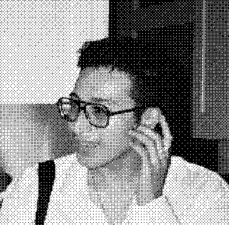

Azad Namazie (they/he) is a poet, performance artist, and digital archivist from Los Angeles, CA. They create websites, archives, and multimedia performances for live and internet audiences. Through their work, they hope to resurrect archival specters, elevate spiritual consciousness, and reclaim our technological imagination.
Azad's performance work has been featured at Celebration Theatre, Zephyr Theatre, and Hollywood Fringe Festival, while their poetry has appeared in Mizna Journal, About Place Journal, and FRUITSLICE, among others. Their plays include Another Birth (commissioned and produced by Celebration Theatre & Greenway Arts Alliance), LOCAL PROPHETS: A Play of Near Collisions (The Joy Who Lived Festival 2025), and The Roadside Bathhouse (PlaygroundLA x Eight Ball Theatre Writer's Workshop). Other theatrical credits include dramaturgy for Memory Lane is a Desert Road (Eight Ball Theatre) and curation of a pre-show archival exhibition for A Third Space (Hollywood Fringe Festival 2024).
As an archivist, Azad is dedicated to supporting artists and grassroots organizations to design sustainable digital archives programs to autonomously preserve and defend their materials from digital loss, surveillance, and proprietary systems. They have processed, preserved, and made accessible audiovisual and born-digital collections at the Los Angeles County Museum of Art, Viet Rainbow of Orange County, and Skid Row History Museum. They are a digital archivist at UCLA Library.
This website was hand-coded in html/css and has no tracking or analytics.

I am open to collaborations!
|
You can contact me at anamazie@proton.me